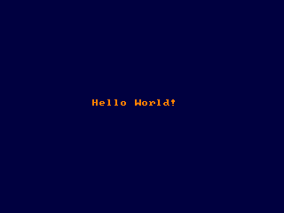

Help Center›FreeBASIC
Colorfunction
Sets the display foreground / background color that is used with console output and graphics output of text
Syntax
Declare Function Color ( ByVal foreground As ULong , ByVal background As ULong ) As ULongParameters
| Name | Description | |
|---|---|---|
foreground | the foreground color to set | |
background | the background color to set |
Return value
Returns a 32-bit value containing the current foreground color in the
Low Word and the current background color in the High Word.In hi/truecolor modes, only the foreground color is returned, taking up the whole 32 bits. Instead, see
ScreenControl to return the current graphics mode color (foreground and background).The old color values can be retrieved at the same time as setting new ones.
Description
The
Color statement sets the current foreground and/or background colors. Circle, Draw, Line (Graphics), Cls, Paint, Print, PReset and PSet all use the last colors set by this function when you don't specify a color to them, where applicable. The color values that Color accepts depend on the current graphics mode.| Mode | Meaning |
| 1 | foreground is screen color (ranging 0-15). background is the emulated CGA palette to be used: 0 (green, red, and brown), 1 (cyan, magenta and white), 2 (same as 0, but with bright colors) or 3 (same as 1, but with bright colors) |
| 2, 11 | foreground is a color index in current palette (ranging 0-1). background is a color index in current palette (ranging 0-1). |
| 7, 8 | foreground is a color index in current palette (ranging 0-15). background is screen color index in current palette (ranging 0-15). |
| 9 | foreground is a color index in current palette (ranging 0-63). background is screen color index in current palette (ranging 0-63). |
| 12 | foreground is a color index in current palette (ranging 0-15). background is a color index in current palette (ranging 0-15). |
| 13 and up | foreground is a color index in current palette (ranging 0-255). background is a color index in current palette (ranging 0-255). |
If you are using a color depth higher than 8bpp, foreground and background are direct
RGB color values in the form &hAARRGGBB, where AA, RR, GG and BB are the alpha, red, green and blue components ranging &h00-&hFF (0-255 in decimal notation). While in hi/truecolor modes, you can use the RGB or RGBA macro to obtain a valid color value.A
Default Palette is automatically set when entering a Screen (Graphics) mode. Remarks
Usage
Color [foreground] [, background]
result = Color [( [foreground] [, background] )]
Differences from QB
- Direct color modes were not supported in QB.
- There is no border argument.
See also
Example
' Sets 320x240 in 32bpp color depth
Screen 14, 32
' Sets orange foreground and dark blue background color
Color RGB(255, 128, 0), RGB(0, 0, 64)
' Clears the screen to the background color
Cls
' Prints "Hello World!" in the middle of the screen
Locate 15, 14
Print "Hello World!"
Sleep

Dim c As ULong
'retrieve current color values
c = Color()
'extract color values from c using LOWORD and HIWORD
Print "Console colors:"
Print "Foreground: " & LoWord(c)
Print "Background: " & HiWord(c)
' In 32-bit color depth, Function Color() returns only the foreground color
#include "fbgfx.bi"
'' screencontrol expects integer/uinteger
Dim As Long fgcolor, bkcolor
ScreenRes 500, 500, 32
Width 500\8, 500\16
Color &HFFFF00, &H0000FF
Cls
Print "From Function Color():"
Print " Foreground Color: "; Hex(Color(), 8)
Print
ScreenControl FB.GET_COLOR, fgcolor, bkcolor
Print "From Sub ScreenControl():"
Print " Foreground Color: "; Hex(fgcolor, 8)
Print " Background Color: "; Hex(bkcolor, 8)
Sleep
Reference
- Documented in KeyPgColor.html